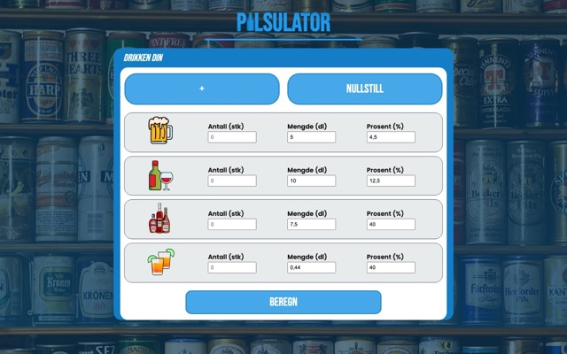
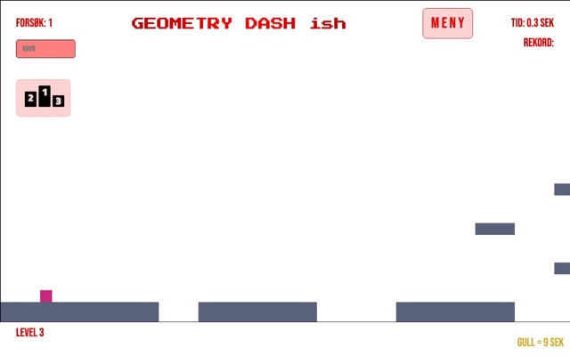
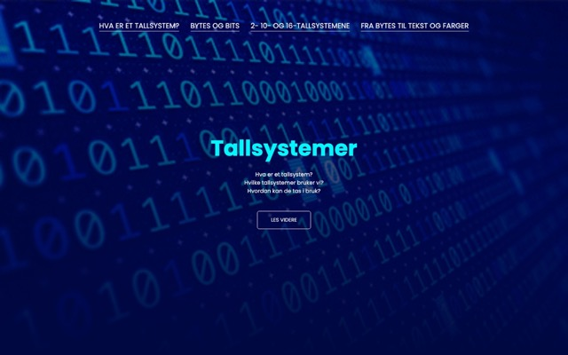
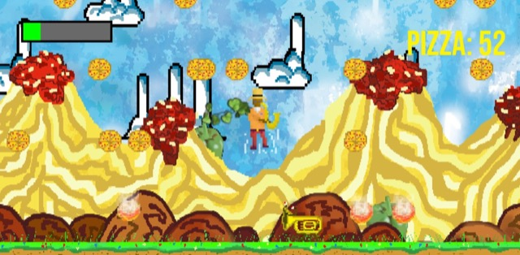
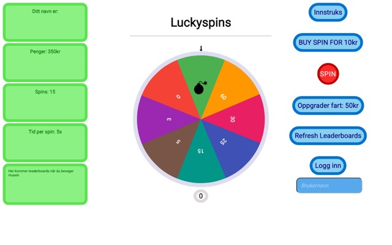
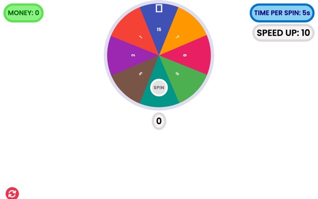
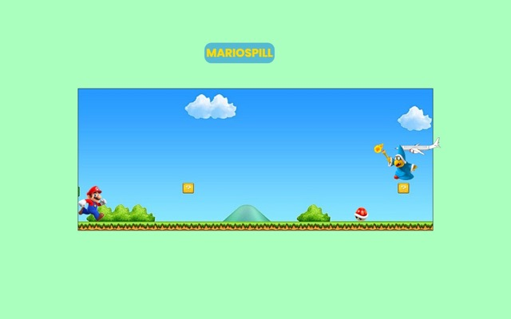

Benjamin Eng
Spill og nettsider jeg laget mens jeg lærte programmering, fra 2021 til 2023. De fleste er skrevet i HTML, CSS og JavaScript og kjører direkte i nettleseren. Nyere prosjekter ligger på porteføljesiden.

Pilsulator
Promillekalkulator basert på Widmarks formel.

Geometry Dash ish
Plattformspill på HTML5 Canvas med 15 baner og ledertavle i Firebase.

Tallsystemer
Nettside om tallsystemer, bits og bytes, og hvordan datamaskinen gjør tall om til tekst og farger.

Shake That Jazz
Pygame-spill med egne sprites og en butikk for oppgraderinger. Laget i Python, så det kjøres lokalt.

Lykkehjul med database
Spinner med innlogging og ledertavle.

Lykkehjul med localStorage
Spinner som lagrer fremgangen i nettleseren.

Mario
Plattformspill i nettleseren.